Analiza mediului intern și a avantajului competitiv
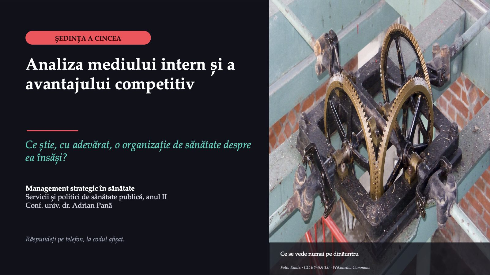
1 / 43Atunci ne-am uitat mai ales în afară, la concurenți. Azi întoarcem privirea spre interior. Ce are spitalul, ce știe să facă și care dintre acestea îl deosebesc cu adevărat de ceilalți?
Ultima dată când ați fost cu cineva drag la un cabinet sau la un spital
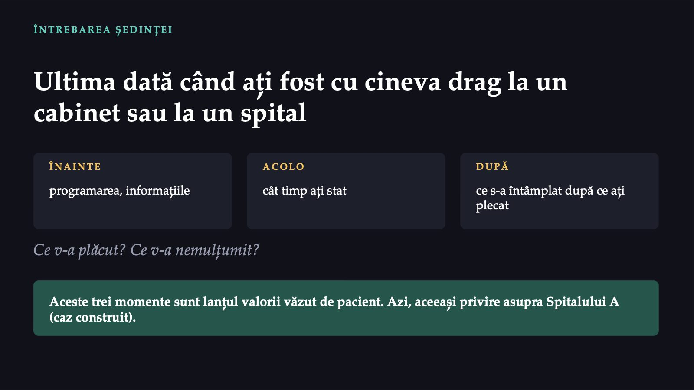
2 / 43Gândiți-vă la ultima dată când ați fost cu cineva drag la un cabinet sau la un spital. Ce v-a plăcut înainte să intrați, cât timp ați stat acolo și după ce ați plecat? Și ce v-a nemulțumit? Aceste trei momente sunt, de fapt, lanțul valorii văzut de pacient.
De la concurenți, spre interior
![SĂPTĂMÂNA TRECUTĂ De la concurenți, spre interior 1 Un spital nu se luptă cu toată lumea, ci cu câțiva furnizori, diferiți pe fiecare linie de servicii. 2 Pe fiecare linie câștigă cine face foarte bine puținele lucruri care contează acolo. 3 Testul VRIO, după fișa disciplinei: valoare, raritate, imitabilitate, organizare. AZI Ce are spitalul, ce știe să facă și care dintre acestea îl deosebesc cu adevărat de ceilalți? Aproape o oră din cele aproape două ore lucrați voi. Nimic din ce faceți în sală nu se notează.](diapozitive/C05/003.jpg) 3 / 43
3 / 43Cursul trecut a arătat că un spital nu se luptă cu toată lumea, ci cu câțiva furnizori, diferiți pe fiecare linie de servicii, iar rivalii direcți sunt cei care îi seamănă. Pe fiecare linie câștigă cine face foarte bine puținele lucruri care contează acolo, factorii critici de succes. Am încheiat cu testul VRIO, prin care fișa disciplinei judecă resursele.
Spitalul A, un an mai târziu
![ACTUL 1 · SITUAȚIA Spitalul A, un an mai târziu SPITALUL JUDEȚEAN DE URGENȚĂ AL JUDEȚULUI B Anul trecut, managerul a pus o parte din fondul de dezvoltare în echipa de cardiologie intervențională și în circuitul ambulanței pentru infarct. Acum prezintă consiliului de administrație analiza internă a spitalului, înaintea avizării bugetului. PUNCTELE TARI · LISTELE SECȚIILOR „personal dedicat” „aparatură modernă” „pacienți mulțumiți” „Dacă suntem atât de buni peste tot, de ce pleacă pacienții la privat?” Directorul financiar Caz construit pentru curs; detaliile sunt plauzibile, nu reale.](diapozitive/C05/004.jpg) 4 / 43
4 / 43Spitalul A este spitalul județean de urgență al Județului B, același din cursul trecut. Acum managerul trebuie să prezinte consiliului de administrație analiza internă a spitalului, înaintea avizării bugetului pe anul următor. A cerut fiecărei secții să-i trimită punctele ei tari și a primit înapoi o listă lungă. Directorul financiar ridică din umeri: „Dacă suntem atât de buni peste tot, de ce pleacă pacienții la privat?”
47
![CE AU TRIMIS SECȚIILE · VALORI IPOTETICE O listă lungă, fără dovezi 47 puncte tari, de la 14 secții și compartimente 3 puncte slabe, pe toată lista CÂTE SECȚII SCRIU… „personal dedicat” 11 „aparatură modernă” 9 „pacienți mulțumiți” 8 … fără vreo măsurătoare. CE MAI ȘTIM Circa 22 din 100 de pacienți lipsesc la programare în ambulatoriu. Circa 4 zile pe lună, programările la examenul prin rezonanță magnetică (RMN) se suprapun peste reviziile aparatului. 3 pagini: biletul de ieșire, pe care pacienții nu-l înțeleg.](diapozitive/C05/005.jpg) 5 / 43
5 / 43Valori ipotetice. Lista are 47 de puncte tari trimise de 14 secții și compartimente; numai 3 puncte slabe. 11 secții scriu „personal dedicat”, 9 scriu „aparatură modernă”, 8 scriu „pacienți mulțumiți”, fără vreo măsurătoare. Din ambulatoriul de specialitate lipsesc la programare circa 22 de pacienți din 100, iar biletul de ieșire are, în medie, 3 pagini.
Ce face managerul cu lista punctelor tari trimise de secții?
 6 / 43
6 / 43Ce face managerul cu lista punctelor tari trimise de secții? Le trece pe toate în analiza internă, le ordonează pe secții și compartimente, le așază pe drumul pacientului și le verifică întrebând pacienții, sau păstrează numai punctele tari pe care le are și concurența?
Convingeți-l pe colegul care a votat altfel
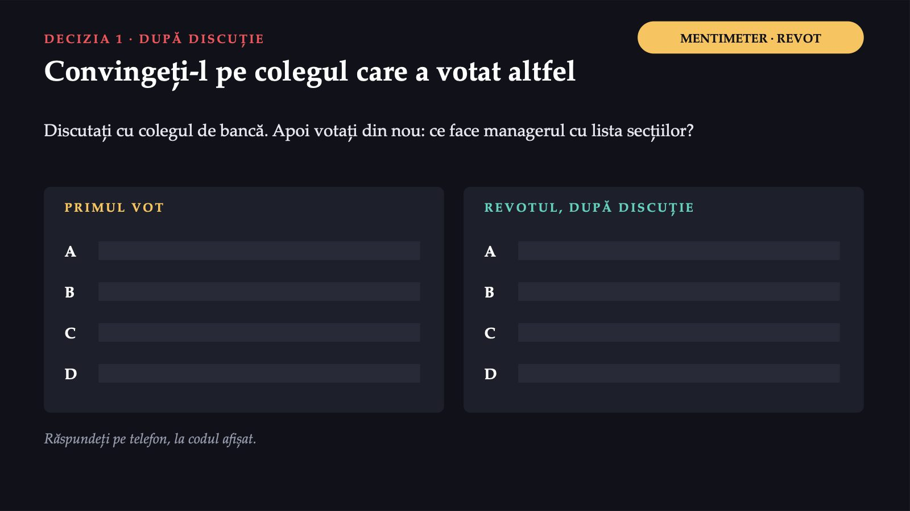
7 / 43Convingeți-l pe colegul care a votat altfel. Apoi votați din nou, pe același enunț, iar cele două distribuții se văd una lângă alta.
Răspunsul apare după ședință
Răspunsul apare după ședință
Răspunsul apare după ședință
Răspunsul apare după ședință
Avantajul nu se vede din interior
![DE CE ESTE GREU Avantajul nu se vede din interior Avantajul competitiv este miezul strategiei (o idee a lui Kotler, reluată de manual). Organizațiile își supraevaluează punctele tari și își recunosc greu punctele slabe. AVANTAJUL COMPETITIV Resurse, competențe și capabilități valoroase, relativ rare, greu de copiat și care pot fi păstrate în timp. Două căi: costuri mai mici sau servicii diferite. Un punct tare pe care îl au toate spitalele din oraș nu aduce avantaj. Sursa: Ginter, Duncan și Swayne, manualul cursului, capitolul 4.](diapozitive/C05/010.jpg) 10 / 43
10 / 43Manualul începe capitolul cu o idee a lui Kotler: a construi și a folosi avantajul competitiv este miezul strategiei. Dar avantajul nu se vede din interior la fel de bine ca din exterior: organizațiile își supraevaluează punctele tari și își recunosc cu greu punctele slabe. Avantajul competitiv nu înseamnă „suntem buni”. Un punct tare pe care îl au toate spitalele din oraș nu aduce avantaj, oricât de adevărat ar fi.
Cei cinci pași ai analizei interne
![CUM SE FACE Cei cinci pași ai analizei interne 1 Ce ar trebui să facă, după analiza externă și a concurenților 2 Ce poate face, cu ce are și cu ce știe 3 Punctele tari și punctele slabe 4 Cele patru întrebări, pentru fiecare punct 5 Ce înseamnă toate acestea pentru strategie PASUL 2 O analiză pe compartimente nu ajunge: nu arată unde se creează valoare pentru pacient. Valoarea: cât de mulțumit e pacientul, față de preț și de rezultatul așteptat. Sursa: Ginter, Duncan și Swayne, manualul cursului, capitolul 4.](diapozitive/C05/011.jpg) 11 / 43
11 / 43Manualul împarte căutarea avantajului competitiv în cinci pași. Primul pas reia concluziile analizei externe și ale analizei concurenților: ce ar trebui să facă organizația? Al doilea întoarce întrebarea: ce poate face, cu ce are și cu ce știe? Pasul al doilea este cel pe care se poticnește managerul Spitalului A: o analiză făcută pe compartimente nu arată unde se creează valoare pentru pacient.
Lanțul valorii
![TERMENUL NOU 1 DIN 3 Lanțul valorii Harta activităților prin care o organizație de sănătate creează valoare pentru pacient: sus, furnizarea serviciului (înainte, în timpul și după); jos, sprijinul (cultura, structura, resursele strategice). În cuvinte de zi cu zi: tot drumul pacientului, plus ce se întâmplă în spatele lui. Fișa disciplinei: „lanțul valoric al organizației de sănătate: înainte, în timpul și după furnizarea serviciului; activitățile de suport: cultura, structura, resursele strategice” Sursa: Ginter, Duncan și Swayne, manualul cursului, capitolul 4; fișa disciplinei.](diapozitive/C05/012.jpg) 12 / 43
12 / 43Lanțul valorii este harta activităților prin care o organizație de sănătate creează valoare pentru pacient: sus, activitățile de furnizare a serviciului, înainte, în timpul și după serviciu; jos, activitățile de sprijin, adică cultura, structura și resursele strategice. În cuvinte de zi cu zi: tot drumul pacientului, plus ce se întâmplă în spatele lui.
Unde se creează valoarea pentru pacient
![LANȚUL VALORII · MANUALUL ȘI SPITALUL A Unde se creează valoarea pentru pacient ÎNAINTE Amintirea vaccinării, programarea ușoară. Spitalul A: programarea, pagina de internet, telefonul. ÎN TIMPUL Îngrijirea propriu-zisă; aici se evaluează mai ales mulțumirea pacienților. DUPĂ Telefonul de a doua zi, controlul, recuperarea. Spitalul A: biletul de ieșire de trei pagini. SPRIJINUL Cultura, structura, resursele strategice. Un dosar pierdut îl face pe pacient să creadă că a fost tratat prost. Sursa: Ginter, Duncan și Swayne, manualul cursului, capitolul 4.](diapozitive/C05/013.jpg) 13 / 43
13 / 43Valoarea începe înainte ca pacientul să intre: la Spitalul A, aici intră programarea în ambulatoriu, informațiile de pe pagina de internet și telefonul la care răspunde cineva. În timpul serviciului stă îngrijirea propriu-zisă. Valoarea continuă după ce pacientul pleacă: biletul de ieșire de trei pagini pe care pacienții nu-l înțeleg este, pentru Spitalul A, o problemă de după serviciu. Iar o factură prea complicată sau un dosar pierdut îi pot face pe pacienți să creadă că spitalul tratează prost.
Spitalul A, o lună mai târziu
![ACTUL 2 · COMPLICAȚIA Spitalul A, o lună mai târziu REȚEAUA PRIVATĂ C Are în oraș centre de rezonanță magnetică deschise până seara. Recrutează doi radiologi de la Spitalul A, cu salarii mai mari. Anunță că va publica pe internet timpii de așteptare pentru fiecare investigație. LA SPITALUL A Radiologii rămași fac ore suplimentare ca să acopere gărzile. Managerul trebuie să spună consiliului care punct slab este cel mai grav și ce face cu punctele tari. Caz construit pentru curs; detaliile sunt plauzibile, nu reale.](diapozitive/C05/014.jpg) 14 / 43
14 / 43Rețeaua privată C, care are în oraș centre de rezonanță magnetică deschise până seara, recrutează doi radiologi de la Spitalul A, cu salarii mai mari. Tot atunci anunță că va publica pe internet timpii de așteptare pentru fiecare investigație. La Spitalul A, radiologii rămași fac ore suplimentare ca să acopere gărzile. Managerul trebuie să spună consiliului care dintre punctele slabe ale spitalului este cel mai grav și ce face cu punctele tari.
7 → 5
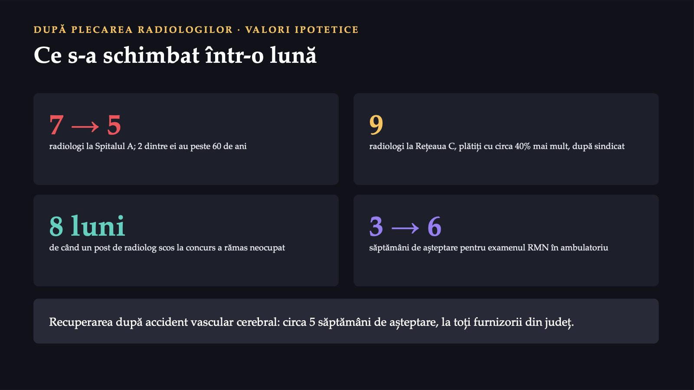
15 / 43Valori ipotetice. Spitalul A avea 7 radiologi; acum are 5, dintre care 2 au peste 60 de ani. Rețeaua privată C are 9 radiologi și plătește, după spusele sindicatului, cu circa 40% mai mult. Un post de radiolog scos la concurs a rămas neocupat de 8 luni. Așteptarea pentru examenul RMN în ambulatoriu a crescut de la 3 la 6 săptămâni. Lista de așteptare pentru recuperarea după accident vascular cerebral are circa 5 săptămâni la toți furnizorii din județ.
Trei feluri de a le vedea
![PUNCTE TARI ȘI PUNCTE SLABE Trei feluri de a le vedea Punctul tare poate aduce un avantaj; punctul slab este ceva ce organizația socotește că trebuie îmbunătățit. SUBIECTIVE Părerea celor care le judecă: angajații unui cămin cred că îngrijesc cu grijă. Cred la fel și pacienții? RELATIVE Se văd numai față de concurenți: centrul universitar care pierde un chirurg celebru în favoarea unui spital local. OBIECTIVE Le recunoaște aproape toată lumea: brevetul unui medicament important, cel puțin până expiră. Sursa: Ginter, Duncan și Swayne, manualul cursului, capitolul 4.](diapozitive/C05/016.jpg) 16 / 43
16 / 43Un punct tare este o resursă, o competență sau o capabilitate care poate aduce organizației un avantaj; un punct slab este una pe care organizația socotește că trebuie s-o îmbunătățească. Sunt subiective când reprezintă părerea celor care le judecă, relative când se văd numai prin comparație cu concurenții principali și obiective când aproape toată lumea le recunoaște.
Resurse, competențe, capabilități
![CE ARE, CE ȘTIE, CE REUȘEȘTE Resurse, competențe, capabilități 1 RESURSELE Ce are organizația: tangibile (clădiri, aparate, bani) și intangibile (reputația, cunoștințele, relațiile). 2 COMPETENȚELE Ce știe să facă: unele sunt doar necesare ca să intri pe o linie, altele sunt distinctive. 3 CAPABILITĂȚILE Cum le combină: tehnologia informației, împreună cu oamenii pregătiți s-o folosească. Spitalul A: echipa de cardiologie intervențională, care lucrează împreună cu ambulanța la orice oră, este o capabilitate. Nu se cumpără ca un aparat. Sursa: Ginter, Duncan și Swayne, manualul cursului, capitolul 4.](diapozitive/C05/017.jpg) 17 / 43
17 / 43Resursele sunt ce are organizația. Competențele sunt ce știe să facă organizația cu resursele ei. Capabilitățile sunt felul în care organizația combină resursele și competențele ca să obțină rezultate mai bune. Când multe organizații au resurse asemănătoare, diferența o fac capabilitățile. Echipa de cardiologie intervențională a Spitalului A, care lucrează împreună cu ambulanța la orice oră, este un exemplu de capabilitate: nu se cumpără ca un aparat.
Condiția de prag
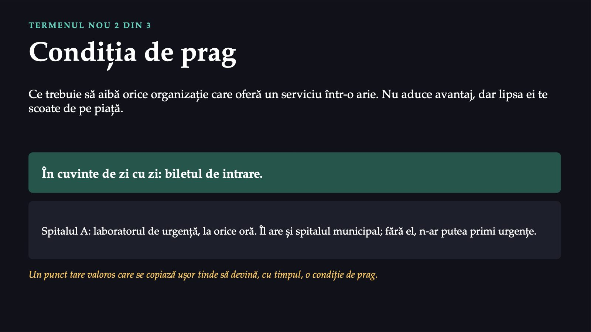
18 / 43Condiția de prag este resursa, competența sau capabilitatea pe care trebuie s-o aibă orice organizație care vrea să ofere un anumit serviciu într-o arie; ea nu aduce avantaj, pentru că o au și ceilalți, dar lipsa ei te scoate de pe piață. În cuvinte de zi cu zi: biletul de intrare. În cazul Spitalului A, laboratorul de urgență care face analize la orice oră este o astfel de condiție.
Dezavantajul competitiv
 19 / 43
19 / 43Dezavantajul competitiv este situația în care un punct slab al organizației contează pentru pacienți și o pune în inferioritate față de concurenții care sunt puternici tocmai acolo. Nu orice punct slab este un dezavantaj competitiv. Un punct slab pe care îl au aproape toți furnizorii din arie nu deosebește pe nimeni.
Patru întrebări pentru fiecare punct
![CELE PATRU ÎNTREBĂRI Patru întrebări pentru fiecare punct 1 Valoare: aduce pacienților o valoare mare sau mică? 2 Raritate: îl au puțini concurenți? 3 Imitabilitate: se copiază ușor sau greu? 4 Păstrare: poate fi păstrat în timp? MANUALUL ȘI FIȘA Manualul: a patra întrebare este păstrarea în timp. Fișa disciplinei (VRIO): organizarea, adică e organizația pregătită să-l folosească? Dacă valoarea e mică, celelalte trei întrebări nu mai au rost. Sursa: Ginter, Duncan și Swayne, manualul cursului, capitolul 4; fișa disciplinei.](diapozitive/C05/020.jpg) 20 / 43
20 / 43În manual, cele patru întrebări sunt valoarea, raritatea, imitabilitatea și păstrarea în timp. Fișa disciplinei numește ca a patra întrebare organizarea. Nu sunt două teorii care se contrazic, ci două întrebări utile. Azi folosim hărțile manualului, deci a patra întrebare este păstrarea; întrebarea despre organizare o punem la sfârșit, înainte de verdict.
Ce înseamnă răspunsurile pentru un punct tare
![HARTA PUNCTELOR TARI · SIMPLIFICATĂ Ce înseamnă răspunsurile pentru un punct tare Valoare · raritate · copiere · păstrare · Ce înseamnă mare · nu e rar · oricum · da · condiție de prag: se menține, nu aduce avantaj mare · rar · ușor · da · avantaj pe termen scurt, probabil viitoare condiție de prag mare · rar · greu · da · avantaj de durată; se poate „paria” viitorul pe el mare · rar · greu · nu · avantaj pe termen scurt: se folosește cât se poate valoare mică · nu merită celelalte întrebări Sursa: harta punctelor tari, manualul cursului, capitolul 4, simplificată.](diapozitive/C05/021.jpg) 21 / 43
21 / 43Manualul transformă răspunsurile la cele patru întrebări în decizii, cu ajutorul a două hărți. Prima este harta punctelor tari, simplificată în tabel, cu răspunsurile scrise în cuvinte.
Ce înseamnă răspunsurile pentru un punct slab
![HARTA PUNCTELOR SLABE · SIMPLIFICATĂ Ce înseamnă răspunsurile pentru un punct slab Valoare · au și ei slăbiciunea? · corectare · își păstrează ei avantajul? · Ce înseamnă mare · nu · greu · da · dezavantaj grav; poate amenința supraviețuirea organizației mare · nu · greu · nu · dezavantaj pe termen scurt, serios până la corectare mare · nu · ușor de corectat · dezavantaj pe termen scurt: se corectează repede mare · cei mai mulți au aceeași slăbiciune · fără dezavantaj; periculos dacă un concurent o corectează primul Sursa: harta punctelor slabe, manualul cursului, capitolul 4, simplificată.](diapozitive/C05/022.jpg) 22 / 43
22 / 43A doua hartă a manualului privește punctele slabe: valoarea, dacă au și concurenții aceeași slăbiciune, dacă se poate corecta și dacă își pot păstra concurenții avantajul.
Care punct slab al Spitalului A este cel mai grav, competitiv?
 23 / 43
23 / 43Care dintre punctele slabe ale Spitalului A este cel mai grav, din punct de vedere competitiv? Programările la examenul RMN suprapuse peste revizii, lipsa de radiologi, biletul de ieșire pe care pacienții nu-l înțeleg sau lista lungă de așteptare la recuperarea după accident vascular cerebral?
Convingeți-l pe colegul care a votat altfel
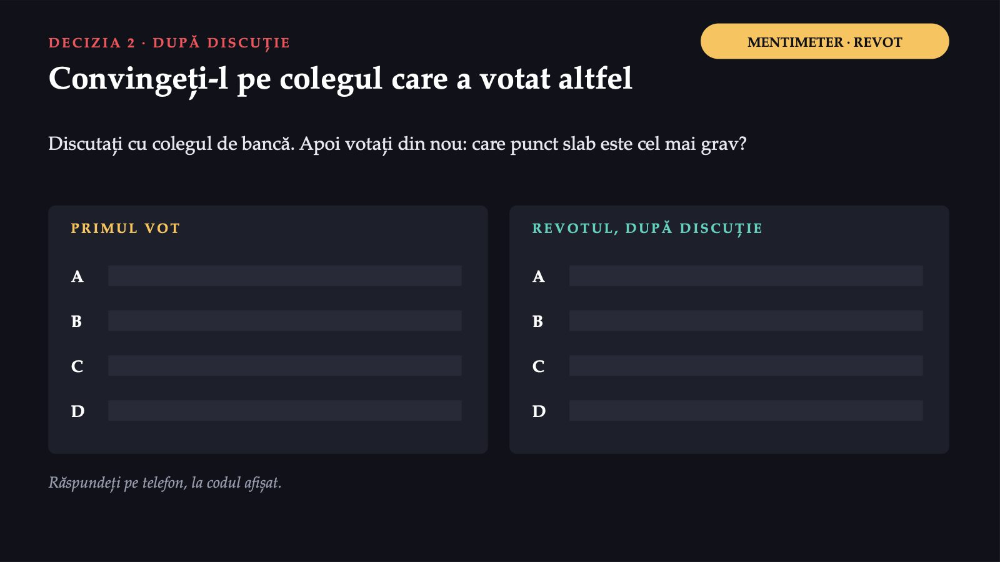
24 / 43Convingeți-l pe colegul care a votat altfel. Apoi votați din nou, pe același enunț, iar cele două distribuții se văd una lângă alta.
Răspunsul apare după ședință
Răspunsul apare după ședință
Răspunsul apare după ședință
Răspunsul apare după ședință
Consiliul de administrație, pe rânduri de bănci
![COMITETUL · COD QR PE RÂND INSTRUMENTUL ȘEDINȚEI Consiliul de administrație, pe rânduri de bănci RÂNDUL 1 Direcția de sănătate publică vot RÂNDUL 2 Economistul numit de consiliul județean vot RÂNDUL 3 Reprezentantul președintelui consiliului județean vot RÂNDUL 4 Colegiul Medicilor vot RÂNDUL 5 Asistenții medicali invitat, fără vot RÂNDUL 6 Sindicatul invitat permanent, fără vot Scanați codul rândului vostru: primiți cartonașul de rol, același din Pregătire. Mai mult de șase rânduri: rolurile se reiau.](diapozitive/C05/027.jpg) 27 / 43
27 / 43Fiecare rând de bănci scanează codul QR de pe diapozitiv și primește unul dintre cele șase cartonașe de rol din Pregătire. Compunerea consiliului urmează legea: reprezentanți ai direcției de sănătate publică, ai consiliului județean, un reprezentant numit de președintele consiliului județean și un reprezentant al Colegiului Medicilor; reprezentantul asistenților medicali participă ca invitat, iar reprezentantul sindicatului este invitat permanent.
Patru resurse, patru întrebări, un verdict
![MENTIMETER · PE ROLURI COMITETUL Patru resurse, patru întrebări, un verdict R1 Aparatul nou de rezonanță magnetică, cumpărat anul trecut R2 Circuitul pentru infarct: echipa de cardiologie intervențională și ambulanța, la orice oră R3 Publicarea pe internet a timpilor de așteptare, pe care spitalul ar putea-o face primul R4 Reputația de „spital județean” VERDICTUL RÂNDULUI avantaj de durată avantaj pe termen scurt condiție de prag fără valoare Răspundeți pe telefon, la codul afișat. Răspundeți din rolul vostru; invitații își scriu verdictul separat.](diapozitive/C05/028.jpg) 28 / 43
28 / 43Managerul prezintă patru resurse ale Spitalului A. R1 este aparatul nou de rezonanță magnetică, cumpărat anul trecut. R2 este circuitul pentru infarct, adică echipa de cardiologie intervențională și ambulanța care lucrează împreună la orice oră. R3 este publicarea pe internet a timpilor de așteptare, pe care spitalul ar putea-o face prima. R4 este reputația de „spital județean”. Fiecare rând răspunde, din rolul lui, la cele patru întrebări pentru fiecare resursă.
Cei care decid și cei care fac munca
![COMITETUL · VERDICTELE ALĂTURATE Cei care decid și cei care fac munca CU DREPT DE VOT direcția de sănătate publică, consiliul județean, Colegiul Medicilor R1 R2 R3 R4 INVITAȚI, FĂRĂ VOT asistenții medicali, sindicatul R1 R2 R3 R4 Valori ipotetice: dacă 3 din cele 4 rânduri cu vot socotesc R1 avantaj de durată, iar ambii invitați îl socotesc condiție de prag, sala vede cum diferă judecata celor care decid de a celor care fac munca de zi cu zi. Ce decizie ar trece în consiliu și cine îi plătește costul?](diapozitive/C05/029.jpg) 29 / 43
29 / 43Valori ipotetice. Dacă 3 din cele 4 rânduri cu vot socotesc R1 avantaj de durată, iar ambii invitați îl socotesc condiție de prag, sala vede pe loc cum diferă judecata celor care decid de a celor care fac munca de zi cu zi. Ce decizie ar trece în consiliu și cine îi plătește costul?
Răspunsul apare după ședință
Răspunsul apare după ședință
Răspunsul apare după ședință
Răspunsul apare după ședință
Pauză
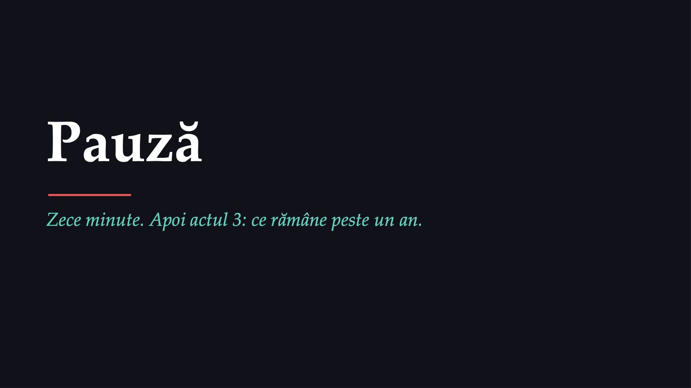
32 / 43Actul al treilea: ce rămâne peste un an.
Răspunsul apare după ședință
Răspunsul apare după ședință
Analiza se reia periodic
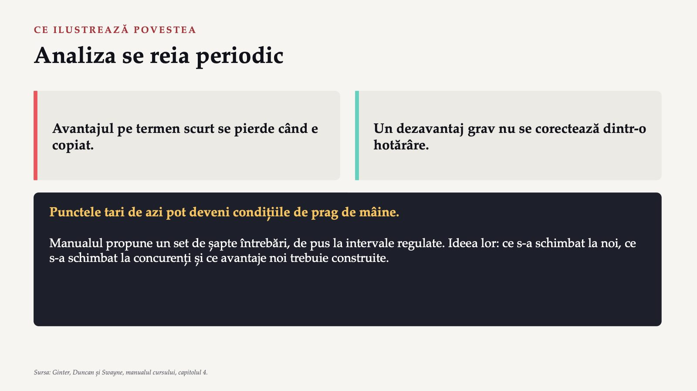
34 / 43Povestea nu are un final fericit și nici unul trist. Ea ilustrează două idei ale manualului: avantajul pe termen scurt se pierde când e copiat, iar un dezavantaj grav nu se corectează dintr-o hotărâre. Organizația trebuie să-și reia periodic analiza internă, pentru că punctele tari de azi pot deveni condiții de prag mâine.
Răspunsul apare după ședință
Răspunsul apare după ședință
Spitalul orășenesc T
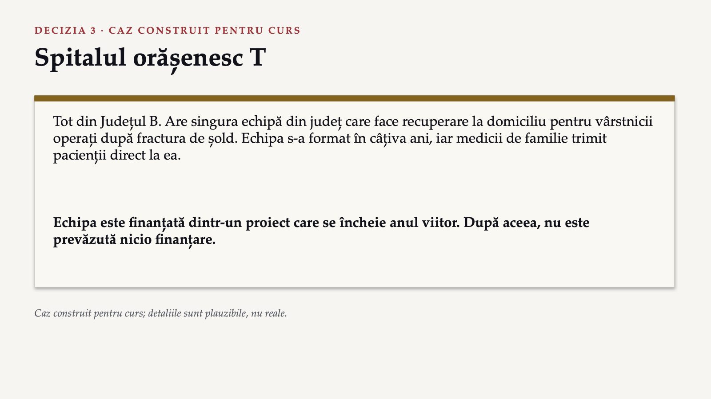
36 / 43Spitalul orășenesc T, tot din Județul B, are singura echipă din județ care face recuperare la domiciliu pentru vârstnicii operați după fractura de șold. Echipa s-a format în câțiva ani, iar medicii de familie trimit pacienții direct la ea. Este finanțată însă dintr-un proiect care se încheie anul viitor, iar după încheierea proiectului nu este prevăzută nicio finanțare.
Cum arată echipa de recuperare la domiciliu pe harta punctelor tari?
![MENTIMETER · ANONIM DECIZIA 3 Cum arată echipa de recuperare la domiciliu pe harta punctelor tari? A Avantaj de durată, pe care spitalul își poate clădi viitorul B Avantaj pe termen scurt, de folosit cât se poate, pentru că nu poate fi păstrat C Condiție de prag, pentru că orice spital ar trebui să facă recuperare D Fără valoare, pentru că recuperarea la domiciliu nu ține de spital Un singur vot, fără revot. Apoi argumentele celor care au votat altfel decât majoritatea. Răspundeți pe telefon, la codul afișat.](diapozitive/C05/037.jpg) 37 / 43
37 / 43Cum ar arăta echipa de recuperare la domiciliu pe harta punctelor tari? Avantaj de durată, avantaj pe termen scurt, condiție de prag sau fără valoare? Un singur vot, fără revot.
Răspunsul apare după ședință
Răspunsul apare după ședință
Patru idei de citit în note
![PENTRU CURIOȘI · NU INTRĂ ÎN TEST Patru idei de citit în note Pacienții mulțumiți, măsurați devin punct tare abia când sunt măsurați la fel, în timp, și comparați cu alții. De unde vin cele patru întrebări teoria bazată pe resurse; autorii trimit la Barney. Efectul Reginei Roșii fiecare concurent care se îmbunătățește îi obligă pe ceilalți să alerge ca să rămână pe loc. Multiplicarea resurselor concentrarea, acumularea, completarea, conservarea și recuperarea. Sursa: Ginter, Duncan și Swayne, manualul cursului, capitolul 4.](diapozitive/C05/039.jpg) 39 / 43
39 / 43Patru idei rămân în note, pentru cine vrea să citească mai departe: de ce lista pacienților mulțumiți nu ajunge fără măsurătoare, de unde vin cele patru întrebări, efectul Reginei Roșii și cum se multiplică resursele puține. Ele nu intră în testul de la final.
Zece întrebări despre ideile ședinței
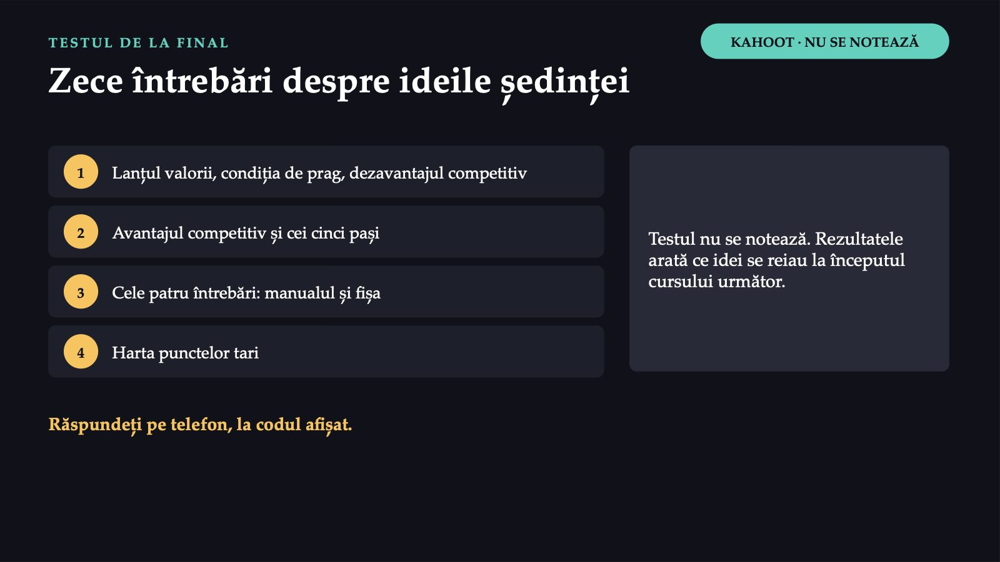
40 / 43Test formativ pe Kahoot, zece întrebări: trei pe termenii noi ai ședinței, iar restul pe ideile reluate. Testul nu se notează. Rezultatele arată ce idei trebuie reluate la începutul cursului următor.
Ce faceți diferit
![DE MÂINE Ce faceți diferit 1 O echipă spune că are „personal dedicat” sau „pacienți mulțumiți”: cum a măsurat și față de cine? 2 Căutați punctele slabe ale unui serviciu: urmăriți un pacient de la programare până la control, nu o secție. 3 Cineva propune o investiție: o are și concurentul și cât de repede o poate copia? 4 Un proiect bun se termină: cine îl va plăti după aceea? Săptămâna viitoare: strategiile direcționale. Seminarul: analiza internă și analiza punctelor tari și slabe, a oportunităților și a amenințărilor.](diapozitive/C05/041.jpg) 41 / 43
41 / 43Când o echipă spune că are „personal dedicat” sau „pacienți mulțumiți”, întrebați cum a măsurat și față de cine. Când căutați punctele slabe ale unui serviciu, urmăriți un pacient de la programare până la control, nu o secție. Când un proiect bun se termină, întrebați din timp cine îl va plăti după aceea. Săptămâna viitoare, cursul trece de la analiză la alegere: strategiile direcționale.
Răspunsul apare după ședință
Răspunsul apare după ședință
Trei întrebări pentru final
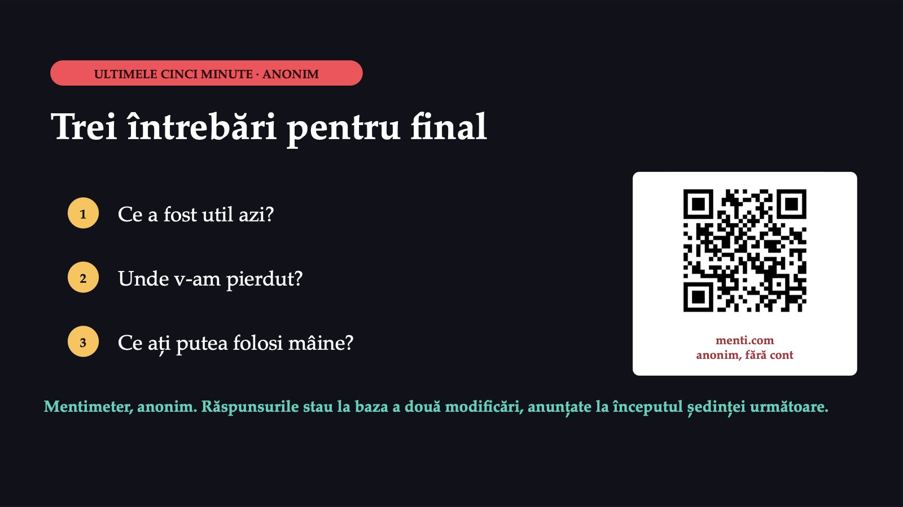
43 / 43Trei întrebări pentru titular, anonim, pe Mentimeter, prin codul QR de pe ultimul diapozitiv: Ce a fost util? Unde v-am pierdut? Ce ați putea folosi mâine? Răspunsurile stau la baza a două modificări, anunțate la începutul ședinței următoare.
Săgeți sau spațiu: navigare · O: vedere de ansamblu · N: notele prezentatorului · F: ecran complet · Esc: închidere